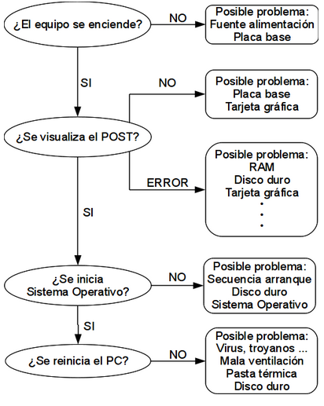
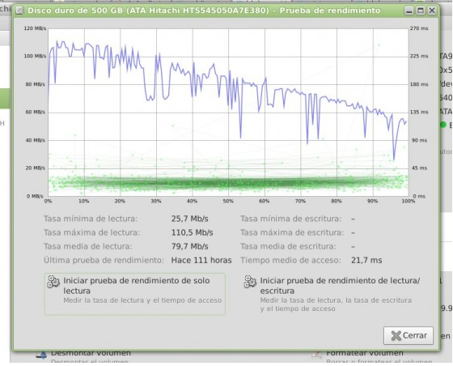
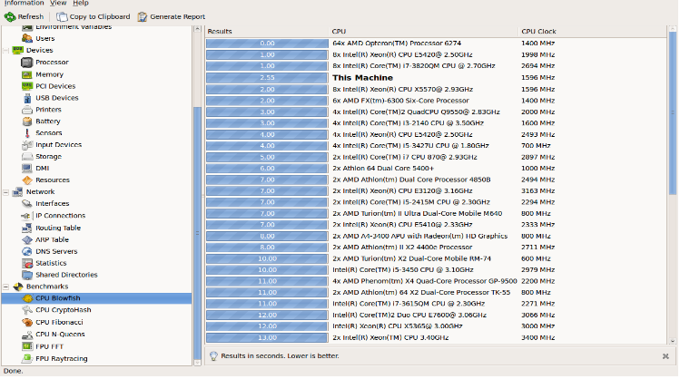
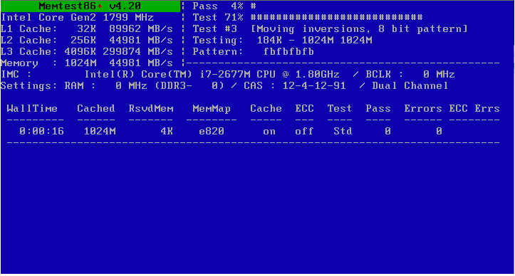

Herramientas de diagnostico#
Comandos generales:#
ls listar contenido
mkdir <carpeta> crear la carpeta
cd <carpeta> entrar dentro de la carpeta
cd .. subir un nivel
pwd ver donde nos encontramos
rm -fr <carpeta> borra archivo/carpeta
mv <carpeta1> <carpeta2> cambia el nombre de la carpeta1 por carpeta2
ln crear links simbólicos
find buscar archivos y carpetas
setxkbmap -layout es cambiar la configuración del teclado
sudo su ser adminsitrador
hardinfo es una herramienta de información y de benchmarking para GNU/Linux. Permite obtener información acerca del hardware de tu ordenador
Discos duros#
GParted es un editor de particiones para el entorno de escritorio GNOME
Clonezilla utilidad para la clonación y copia de seguridad de disco.
mount <device> <punto de montaje> montar los dispositivos, discos duros, isos, etc …
umount <punto de montaje> desmonta
df -h particiones que están montadas y espacio utilizado
dd permite copiar y convertir datos de archivos a bajo nivel
fdisk -l particiones que están montadas y espacio utilizado
hdparm utilidad puede ajustar parámetros del disco
hdparm -t /dev/sda # ver la velocidad de transferencia
smartctl -i /dev/sda para conocer el modelo de disco duro, y saber si soporta SMART
smartctl -s on /dev/sda # habilitar soporte SMART
smartctl -H /dev/sda # chequear el estado del SMART
Modo gráfico : gsmartcontrol
badblocks*
badblocks -s -v /dev/sda -o salida.txt # Para saber si el disco duro tiene sectores defectuosos ejecutamos
Hddtemp-0.3
hddtemp /dev/sda # obtenemos la temperatura del primer disco
Palimpsest
TestDisk: (testdisk) Nos permite hacer recuperación de particiones y sectores de arranque para distintos formatos.
PhotoRec : (photorec) Es un software de recuperación de datos, diseñado para recuperar archivos perdidos, incluyendo vídeos, documentos, archivos de discos duros, CD-ROM, y las imágenes borradas de las tarjetas de memorias de las cámara digitales (de ahí el nombre). PhotoRec ignora el sistema de archivos, y hace una búsqueda profunda de los datos, funcionando incluso si dicho sistema de archivos está muy dañado o ha sido formateado.
Foremost : Es un software de recuperación de datos
RAID:
mknod #creación del RAID
mdadm #administrar discos del raid
BIOS/UEFI#
dmidecode nos da información sobre la BIOS el tipo de hardware soportado, marca y modelo de la placa, tipo de socket, tamaño máximo memoria por slot…
CPU#
cat /proc/cpuinfo
hardinfo

Memoria#
cat /proc/meminfo
free -m
Para ver el uso en tiempo real utilizamos: watch -n 1 free -m
Como se puede observar hay una gran cantidad de memoria en el caché, de la cual aproximadamente la mitad está siendo utilizada por las aplicaciones abiertas. Para liberar páginas guardadas en el caché, inodos y entradas de directorio basta con ejecutar el comando: sudo sync ; sudo sysctl -w vm.drop_caches=3
Memtest86+

Dispositivos#
lshal nos informa de todos los dispositivos reconocidos por nuestro sistema operativo. Obtenemos una salida muy extensa por lo que vamos a limitarla utilizando * lshal | grep info.product | cut -d# -f2 | sort
lspci nos informa sobre los dispositivos PCI
lsusb para ver los dispositivos USB Si queremos ver solamente los dispositivos activos lsusb | grep -v 0000:0000
Otros:
Install | I-Nex
Bonnie++ es un programa utilizado para comprobar el rendimiento de discos duros y sistemas de archivos. Permite la creación de tests de lectura, escritura y borrado de archivos de diversos tamaños, etc.
Ide-smart
Lm_sensors.
IOzone
Dbench.
Bonnie.
IO Bench.(tiotest is a file system benchmark especially designed to test I/O performance with multiple running threads.)
Nhfsstone.
Links:
http://blog.desdelinux.net/linux-al-rescate-algunas-distros-para-volver-del-desastre/